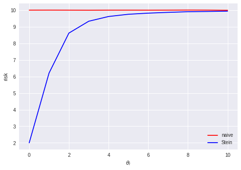
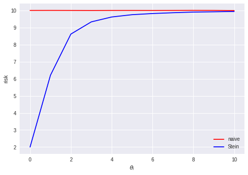
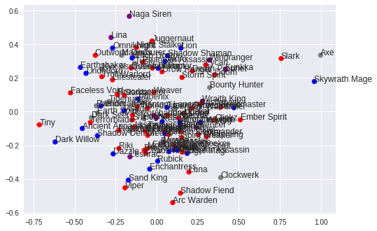
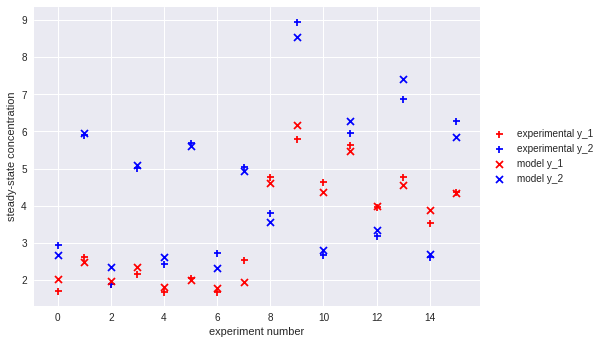
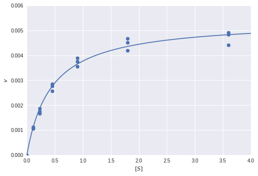
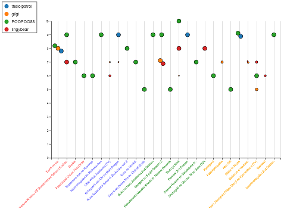

Stein's paradox

I recently heard of Stein's paradox, and at first I couldn't believe it! In this post, I'll convince myself by comparing the risk of a James–Stein estimator to a naive estimator on a simulated high-dimensional dataset.


I recently heard of Stein's paradox, and at first I couldn't believe it! In this post, I'll convince myself by comparing the risk of a James–Stein estimator to a naive estimator on a simulated high-dimensional dataset.


One of the coolest results in natural language processing is the success of word embedding models like Word2vec. These models are able to extract rich semantic information from words using surprisingly simple models like CBOW or skip-gram. What if we could use these generic modelling strategies to learn embeddings for something completely different - say, Dota 2 heroes.
In this post, we'll use the OpenDota API to collect data from professional Dota 2 matches and use Keras to train a Word2vec-like model for hero embeddings.


In yesterday's post, we did some simple fitting of a Michaelis-Menten enzyme kinetics model for a single step of an isolated reaction. What happens when we have multiple reactions with multiple species involved occuring at the same time? Is it possible to infer something about the kinetic parameters of such a system by only looking at the steady-state concentrations of the species in the system under different experimental conditions? In this post, we'll apply some differential equations and simple optimization in Python to try to find out.


Biochem students will likely remember the mathematical beauty of enzyme kinetics models like the Michaelis-Menten model. In this short post, we'll take a look at how we can fit this kind of model to experimental data in Python using some staightforward optimization.


Everyone loves watching anime, but when there are so many shows airing it can be hard to keep track of what to watch and who's watching what. In this post, we'll use data from MyAnimeList to drive a custom D3.js visualization showing the ratings and number of episodes watched for all our friends.